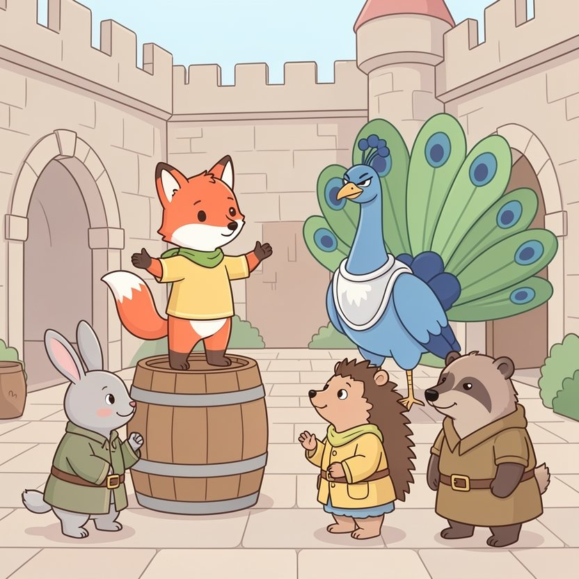

Titistoire › Les Étoiles (3-6 ans)
Filou et le dragon de la tour du Nord
Une histoire de Filou le renard pour parler de : dire la vérité.

▶ Écouter et regarder l'histoire
Gratuit, sans inscription : la voix lit, le texte suit mot à mot, les images tournent comme dans un album.
Le texte de l'histoire
Au château de Hauteroche, tout le monde admire Sire Gontran, le paon chevalier. Son armure étincelle, sa queue fait la roue, et lui, figurez-vous, il a vu un dragon. De loin. Un jour.
« Pfff, lâche Filou, adossé à son tonneau. Un dragon ? Moi, j'en ai vu un de tout près. » Les têtes se tournent. C'est bien agréable, toutes ces têtes tournées.
« Et même… je l'ai chassé ! Avec un simple bâton ! » fanfaronne-t-il. Ce n'est pas vrai. Mais c'est sorti tout seul, comme un hoquet.
Le lendemain, à la fontaine, on l'interroge : « Il était grand, ton dragon ? » Filou écarte les bras tant qu'il peut. « Grand comme… une maison ! »
Le surlendemain, au marché : « Et il crachait du feu ? » Filou gonfle les joues, les griffes en l'air. « Du feu, de la fumée, et des éclairs par les oreilles ! »
De bouche en oreille, le mensonge de Filou grossit, grossit, comme une boule de neige qui dévale la colline. Et une boule de neige, ça ne s'arrête pas toute seule.
Un matin, les trompettes sonnent. La reine Hermine fait appeler Filou. « Brave renard ! Un dragon s'est installé dans la tour du Nord. Il fume, il gronde, et toutes mes confitures sentent le roussi. »
« Toi qui chasses les dragons avec un bâton, va, et délivre-nous ! » Toute la cour applaudit. Sire Gontran aussi bat des ailes, avec un drôle de petit sourire en coin.
Filou ouvre la bouche pour avouer la vérité. Mais il y a tant de monde, tant d'yeux posés sur lui… « Fa… facile », bafouille-t-il. Et ses genoux font clac-clac-clac.
L'escalier de la tour du Nord tourne, tourne, et compte cent marches. À chaque marche, Filou pense : « Demi-tour ! » Et à chaque marche, il pense : « Mais qu'est-ce qu'ils diront ? »
Là-haut, ça gronde. GRRRMMBL. Un filet de fumée se glisse sous la porte. Filou agrippe son bâton, le poil tout hérissé. Jamais de sa vie il n'a eu aussi peur.
Du bout de la patte, il entrebâille la porte. Criiii… Et derrière la porte, il y a…
… une toute petite dragonne violette, assise par terre, qui pleure à chaudes larmes. « Hic ! » Une flammèche lui sort du nez. « Hic ! » Le rideau prend feu. Vite, elle l'éteint d'un coup de queue.
« Ne me chasse pas ! supplie-t-elle. Je m'appelle Braise. J'ai le hoquet depuis mardi. Hic ! Je brûle tout ce que je touche, alors plus personne ne veut de moi. »
Filou pose son bâton par terre. Ce n'est pas un monstre grand comme une maison. C'est quelqu'un de tout petit qui a un gros chagrin, et le hoquet par-dessus le marché.
« Je connais un remède contre le hoquet », annonce Filou. Il bondit pour la faire sursauter : « BOUH ! » « Hic ! » Raté. Il la fait boire la tête en bas. « Hic ! » Encore raté.
Alors Filou s'assoit contre le mur, les oreilles basses, et il confie ce qu'il n'a confié à personne. « Tu sais, Braise… je n'ai jamais chassé de dragon. J'ai tout inventé. Je voulais juste qu'on me regarde. »
Braise ouvre des yeux tout ronds. La voilà tellement ébahie… qu'elle en oublie son hoquet. Plus de hic. Plus de flammèche. Juste un petit rire, tout chaud.
Reste le plus difficile : redescendre les cent marches, la patte de Braise dans la sienne. Dans la cour, tout le château attend son héros.
Filou prend une grande inspiration. « Je n'ai pas chassé le dragon. Je n'en ai jamais chassé aucun. J'ai menti, et mon mensonge est devenu plus gros que moi. Voici Braise. Elle avait seulement le hoquet. »
Un grand silence. Sire Gontran en laisse tomber une plume. Puis la reine Hermine s'avance, et sa patte se pose sur la tête de Filou. « Il faut plus de courage pour dire cela, petit renard, que pour grimper dans une tour. »
Depuis ce jour, Braise habite au château. C'est elle qui allume les cheminées, qui dore les tartines d'un petit souffle et qui tiédit le bain de la reine. Sans rien brûler. Ou presque.
Et Filou ? Juché sur la fontaine ou sur un tonneau du marché, il raconte toujours des histoires. Des histoires de dragons grands comme des maisons.
Mais maintenant, il commence chaque fois par : « Il était une fois… » Comme ça, tout le monde sait que c'est pour de faux. Et tout le monde l'écoute quand même, bouche bée.